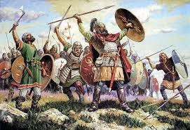
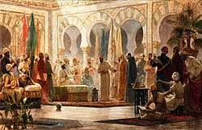
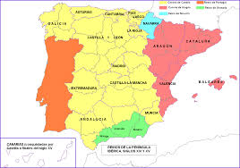

Hispania Romana-Reino Visigodo
Romanización y cultura española
Invasiones germánicas y monarquía visigoda

Tras la caída de Roma, los visigodos fundaron el Reino de Toledo (s. VI). Adoptaron estructuras romanas y tradiciones
germánicas como la monarquía electiva. Se unificaron religión (Recaredo, 589) y leyes (Liber Iudiciorum, Recesvinto). La
inestabilidad por las luchas nobiliarias debilitó el reino y facilitó la invasión musulmana de 711.
La evolución política de Al Ándalus

Emirato dependiente (714/756):
Al-Ándalus fue una provincia del Califato Omeya de Damasco. Hubo luchas entre árabes y bereberes. En 722, Covadonga marcó el inicio de la resistencia cristiana. Además, la inestabilidad política por los continuos cambios de gobernadores debilitó el control omeyaEmirato independiente (756/929):
Abderramán I rompió con Bagdad y creó un emirato autónomo con capital en Córdoba. Hubo conflictos internos y presiones cristianas. El emirato impulsó el desarrollo económico gracias al comercio y a nuevas técnicas agrícolas.Califato de Córdoba (929/1031):
Abderramán III se proclamó califa, alcanzando el máximo esplendor político, económico y cultural. Tras Almanzor y las guerras civiles, el califato se desintegró. Durante esta época, Córdoba se convirtió en uno de los mayores centros intelectuales del mundo.Reinos de taifas e invasiones (1031/1246):
El territorio se dividió en taifas débiles, sometidas a tributos a los cristianos. Los almorávides y almohades del norte de África unificaron temporalmente Al-Ándalus, pero fueron derrotados en las Navas de Tolosa (1212). Ya que, la fragmentación política favoreció el avance de los reinos cristianos hacia el sur.Reino nazarí de Granada (1238/1492):

Último reino musulmán, próspero y culturalmente brillante (Alhambra). Fue conquistado por los Reyes Católicos en 1492, poniendo fin al dominio musulmán en la Península. Granada mantuvo su supervivencia mediante pactos diplomáticos y el pago de tributos.
Reinos cristianos

Las Cortes surgieron en los reinos cristianos peninsulares a partir del siglo XII como evolución de la antigua curia regia del reino asturleonés, heredera a su vez de la Aula Regia visigoda. Aunque las monarquías medievales eran hereditarias, su carácter patrimonial llevaba con frecuencia a la división de los reinos, y hasta el siglo XII el gobierno se organizaba de forma muy simple en torno al rey.
Las Cortes se configuraron como una asamblea estamental, formada por representantes de la nobleza, el clero y los burgueses de las principales ciudades. Sus funciones principales eran dos:
- Consultar y aconsejar al rey (consilium).
- Aprobar los subsidios solicitados por el monarca para financiar campañas militares (auxilium), normalmente mediante impuestos pagados por el estado llano.
VOLVER A PÁGINA INICIAL